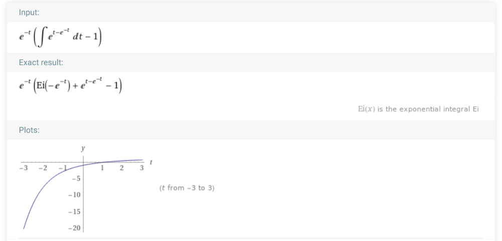
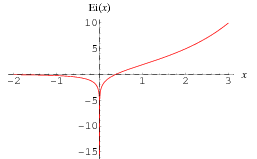

2020-11-16 Searching for an analytical form for the PSP¶
Imports¶
from voltage_to_wiring_sim.support.notebook_init import *
Preloading:
- numpy … (0.10 s)
- matplotlib.pyplot … (0.20 s)
- numba … (0.27 s)
- unitlib … (0.01 s)
Importing from submodules (compiling numba functions) … ✔
Imported `np`, `mpl`, `plt`
Imported codebase (`voltage_to_wiring_sim`) as `v`
Imported `*` from `v.support.units`
Setup autoreload
# We use `v` for v(t) below.
vtws = v;
from sympy import *
Problem statement¶
a, b, v_r, tau = symbols("a, b, v_r, tau")
v, u, g = symbols("v, u, g", cls=Function)
t = symbols("t", nonnegative=True);
eq_g = Eq(g(t), exp(-t/tau))
eq_v = Eq(Derivative(v(t), t),
v(t)**2 - u(t) + g(t)*v(t)).subs(eq_g.lhs, eq_g.rhs)
eq_u = Eq(Derivative(u(t), t),
a*(b*v(t)-u(t)))
initial_conditions = {
v(0): v_r,
u(0): 0,
};
Solve¶
%%time
sol = dsolve((eq_v, eq_u), ics=initial_conditions)
Wall time: 16.1 s
sol[0]
sol[1]
Examine ‘solution’¶
v_sol = sol[0].rhs;
Concrete values for constants:
v_sol_1 = v_sol.subs(
{(a, 1),
(v_r, -1),
(tau, 1)
}).doit()
x0, y0 = symbols("x0, y0", cls=Function)
\(x_0(t)\) is a new unknown function.
We only have \(y_0(0)\) (and not \(y_0(t)\)) in the solution for \(v\), so \(y_0(0)\) is simply a new free constant.
Set both to a constant:
%%time
v_sol_1_x0_ct = v_sol_1.subs(
{(x0(0), 1),
(x0(t), 1),
(y0(0), -1)
}).simplify()
Evaluate and plot for a range of \(t\)’s:
f = lambdify(t, v_sol_1_x0_ct)
ts = np.linspace(0, 10)
fig, ax = plt.subplots()
ax.plot(ts, f(ts))
ax.set(xlabel="t", ylabel="v(t)");
Not our PSP shape yet, so \(x_0(t)\) is not a constant 1 :)
Choosing a function of \(t\) for \(x_0\) results in an expression that needs to be integrated numerically to be plotted:
%%time
v_sol_1_x0_exp = v_sol_1.subs(
{(x0(0), 1),
(x0(t), exp(-t)),
(y0(0), -1)
}).simplify()
WolframAlpha evaluation & plot (assuming that integral with 0 at the top is 0):

This is also not our PSP shape.
(the exponential integral:) 
Reproducibility info¶
vtws.print_reproducibility_info(verbose=True)
This cell was last run on Mon 16 Nov 2020, at 13:42 (UTC+0100),
by tfiers on yoga.
Last git commit (Fri 13 Nov 2020, 13:31).
Uncommited changes to:
AM notebooks/2020-11-11__unitlib.ipynb
?? notebooks/2020-11-16__no_analytical_PSP.ipynb
Platform:
CPython 3.8.3
Windows-10
Intel(R) Core(TM) i7-10510U CPU @ 1.80GHz
Dependencies of voltage_to_wiring_sim and their installed versions:
numpy 1.19.2
matplotlib 3.3.2
numba 0.51.2
unitlib 0.3.post22+dirty
joblib 0.17.0
preload 2.1
py-cpuinfo 7.0.0
import sympy
sympy.__version__
'1.6.2'